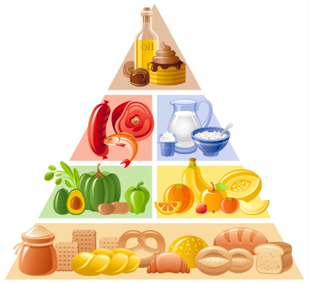

A Importância da Nutrição
A nutrição é fundamental para a saúde e o bem-estar, pois envolve o fornecimento de todos os nutrientes necessários para que o corpo funcione corretamente. Aqui estão alguns pontos essenciais sobre nutrição:
- Macronutrientes:
- Carboidratos: São a principal fonte de energia. Devem ser obtidos de fontes saudáveis, como grãos integrais, frutas e legumes.
- Proteínas: Essenciais para a construção e reparação dos tecidos. Podem ser encontradas em carnes magras, peixes, ovos, leguminosas e produtos lácteos.
- Gorduras: Importantes para a saúde celular e para o transporte de vitaminas. As gorduras saudáveis incluem azeite de oliva, abacate, nozes e peixes gordurosos.
- Micronutrientes:
- Vitaminas: Cada uma tem funções específicas, como a vitamina C, que fortalece o sistema imunológico, ou a vitamina D, importante para a saúde óssea.
- Minerais: Essenciais para várias funções corporais, como o cálcio para os ossos, o ferro para o transporte de oxigênio no sangue, e o magnésio para a função muscular e nervosa.
- Hidratação: Manter-se hidratado é vital para todas as funções corporais. A água regula a temperatura, lubrifica as articulações e ajuda na digestão.
- Equilíbrio e Variedade: É importante ter uma dieta equilibrada que inclua uma variedade de alimentos para garantir a ingestão de todos os nutrientes necessários.
- Fibra: Encontrada em frutas, vegetais, grãos integrais e leguminosas, a fibra é crucial para a saúde digestiva e ajuda a controlar os níveis de colesterol e açúcar no sangue.
- Moderação: Consuma alimentos com moderação, especialmente os ricos em açúcar, sal e gorduras saturadas, para evitar problemas como obesidade, hipertensão e doenças cardíacas.
- Alimentação Consciente: Preste atenção ao que come, desfrute das refeições e evite o consumo excessivo.
- Suplementação: Em alguns casos, pode ser necessário usar suplementos para garantir a ingestão adequada de certos nutrientes, mas isso deve ser feito com orientação de um profissional de saúde.

Por que uma Boa Nutrição é Essencial?
Uma boa nutrição é a base para uma vida saudável, proporcionando a energia e os nutrientes necessários para manter o corpo e a mente funcionando de forma otimizada.